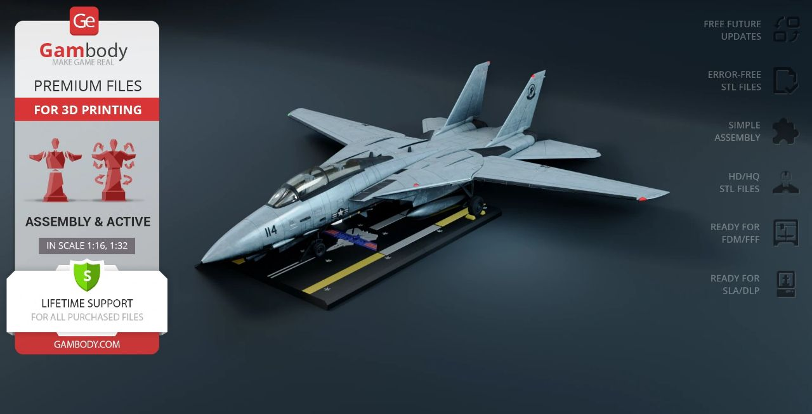

F-14“雄猫”战斗机 / F-14 Tomcat — Gambody FDM
包含大型 FDM 分件、装配资料与展示支架，适合尺寸规划、结构装配和航空主题涂装。
分类：机械/载具；来源说明：库存来源标注：F-14 Tomcat FDM Gambody；作者、许可与使用范围以原始文件说明为准。
下载状态：historical_local_verified（测试页不开放下载）
分享状态：test_only_not_public
publication_id=testpub-560f46024a99cf18b808f466